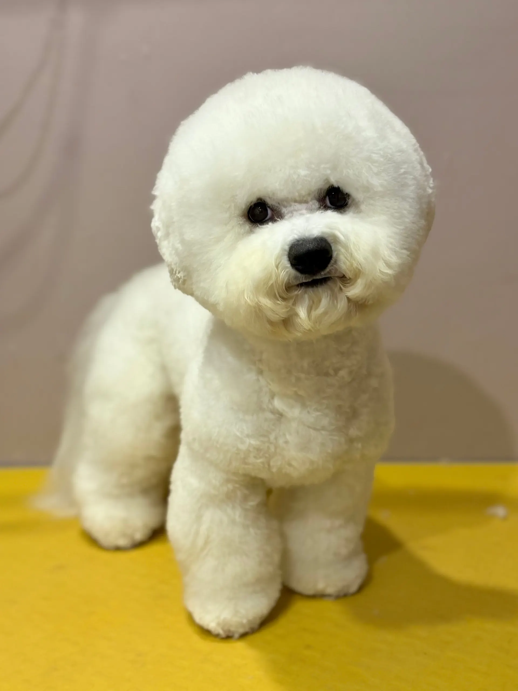
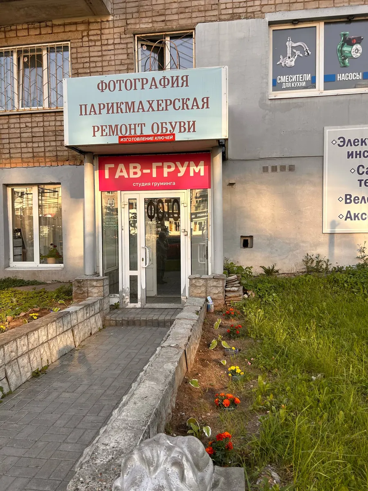
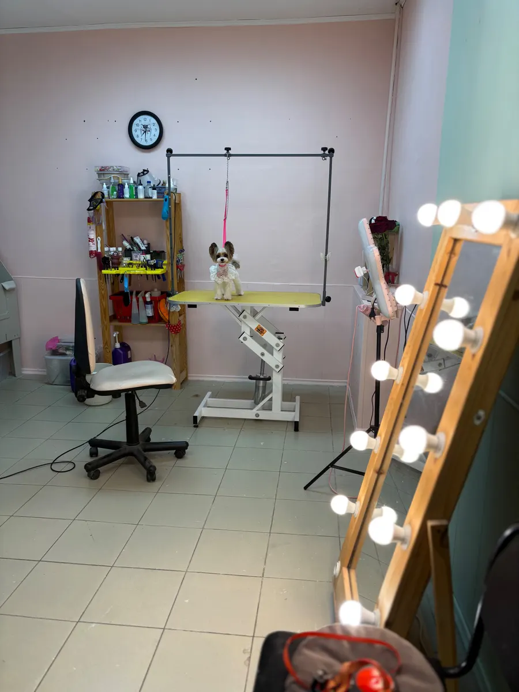
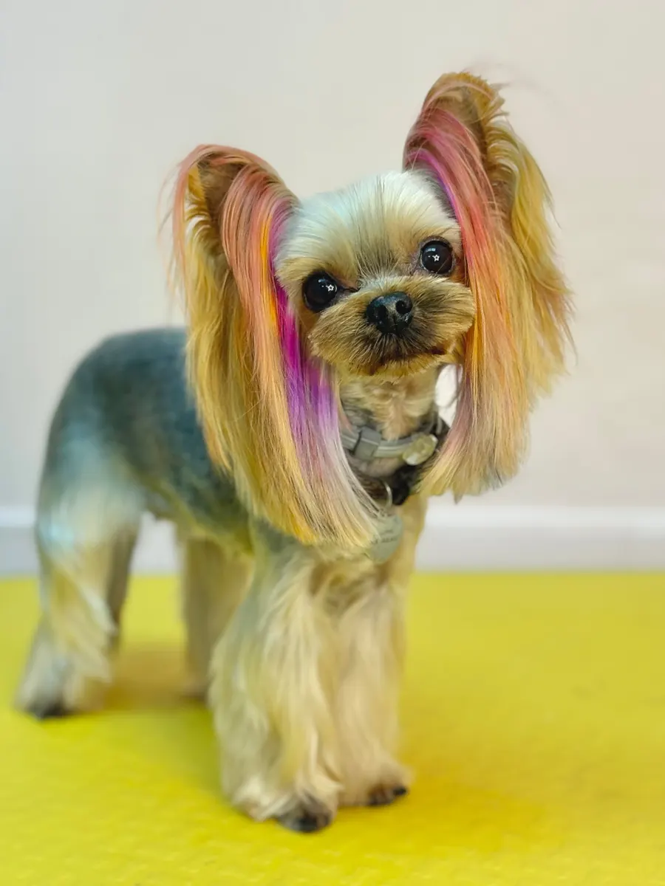

Груминг-студия · Ижевск
Груминг собак в Ижевске – цены, работы и запись
Фото работ грумера, цены на стрижки и запись – на одной странице. Есть креативный груминг.
- Работаем пн-пт, 10:00–20:00
- 4,7 на Яндекс.Картах
- Мытьё, сушка и стрижка по породе в одном комплексе

Услуги и цены
Цены с карточки студии на Яндекс.Картах, обновлены 14 июля. В комплекс стрижки входят мытьё профессиональной косметикой, сушка феном или компрессором, чистка ушей, стрижка и подпиливание когтей, окантовка лап и модельная стрижка по породе.
Стрижки, полный комплекс
- Стрижка собакиКомплекс2 000 ₽
- Стрижка мальтезеМодельная стрижка, полный комплекс2 100 ₽
- Стрижка шпицаПолный комплекс2 200 ₽
- Стрижка бишон-фризеМодельная стрижка, полный комплекс2 500 ₽
Дополнительно
- Креативный грумингОкрашивание шерсти, выбривание узоров, перья, стразы, блеск-тату400 ₽
- Стрижка когтейСобаки, кошки, кролики250 ₽
Другие услуги
- Спауточнить
- Чистка зубовуточнить
- Купание и вычесываниеуточнить
- Экспресс-линькауточнить
Цену услуг без указанной стоимости назовёт мастер при записи. Подарочный сертификат, скидки, бонусы и подарки: условия уточняйте у мастера.
Как записаться
- 01
Выбираете услугу
Цена каждой названа в прайсе выше.
- 02
Пишете в Telegram или звоните
Запись предварительная, студия работает с понедельника по пятницу с 10:00 до 20:00.
- 03
Согласуете время заранее
Мастер называет стоимость до начала работы.
- 04
Приходите на Пушкинскую, 169
Есть парковка, рядом остановка у Администрации Первомайского района.



Что важно знать
Стрижка по породе
Модельная стрижка с учётом породы: бишон-фризе, мальтезе, шпиц, йорк и другие.
Креативный груминг
Окрашивание шерсти, выбривание узоров, перья, стразы и блеск-тату.
Удобная оплата
Банковский перевод, наличные, СБП, QR-код. Есть предоплата и дисконтная система скидок.
Школа груминга
На карточке студии отмечена школа груминга: подробности уточняйте у мастера.
Отзывы с Яндекс.Карт
«Екатерина отличный профессионал. Всегда доброжелательна. С нашим непоседой шпицом с первого посещения "договорилась", нашла к нему подход, даже намордник не понадобился.»
Таскира Нугманова · 19 июля
«Прекрасная грумер Екатерина! Доверяю только ей нашего малыша. Очень чуткая и добрая, работает с душой и на совесть. Рекомендую 10 из 10!»
Анна Яковлева · 21 июля
«Очень нравится эта студия, стригут прямо отлично, лучше всех в Ижевске, от чистого сердца говорю!! Спасибо»
Соня Г. · 18 июля
Отзывы с карточки на Яндекс.Картах.
Запись на ближайшие дни
- Адрес
- Пушкинская ул., 169, Ижевск
- Часы
- Пн–Пт 10:00–20:00, сб и вс выходной
- Телефон
- +7 (909) 054-88-97